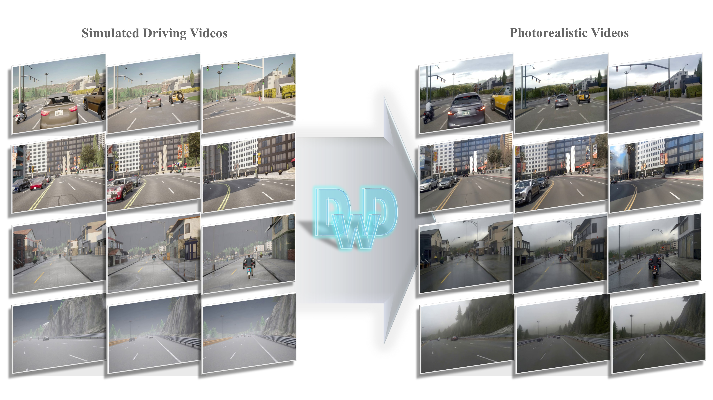
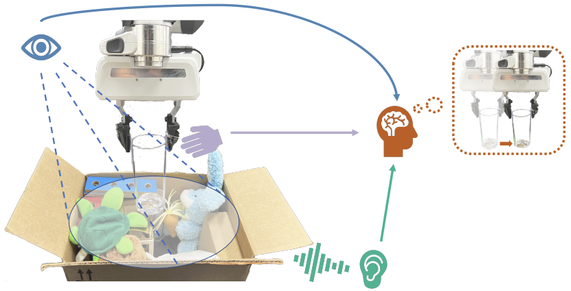

Stanford University
Master of Science in Mechanical Engineering
2020–2022
I work at Huawei, where I have been since October 2022. My research interests include robot learning, spatial intelligence, 3D vision, and world models.
I received my M.S. in Mechanical Engineering from Stanford University and my B.S. in Mechanical Engineering from Purdue University, after studying at Shanghai Jiao Tong University.
Master of Science in Mechanical Engineering
2020–2022
Bachelor of Science in Mechanical Engineering
Transferred from Shanghai Jiao Tong University in fall 2018 as an exchange student.
2018–2020
Bachelor of Science in Mechanical Engineering
2016–2018
Oct. 2022–Present
* Equal contribution. † Project lead.

Xuyang Chen*, Conglang Zhang*, Chuanheng Fu, Zihao Yang, Kaixuan Zhou†, Yizhi Zhang, Jianan He, Yanfeng Zhang, Mingwei Sun, Zhen Dong, Xiaoxiao Long, Zengmao Wang, Liqiu Meng
ACM Multimedia, 2026
Using DINOv3 features to guide realistic driving video generation from simulation, preserving scene structure and temporal consistency.
* Equal contribution. † Project lead.
I work on controllable spatiotemporal generation (STCG) for driving simulation, combining multi-camera videos, text descriptions, and multi-camera trajectories to generate realistic driving scene videos with controllable spatial layouts and consistency with road structures and motion trajectories.
Released at HDC 2025

Hao Li*, Yizhi Zhang*, Junzhe Zhu, Shaoxiong Wang, Michelle A. Lee, Huazhe Xu, Edward Adelson, Li Fei-Fei, Ruohan Gao, Jiajun Wu
Conference on Robot Learning (CoRL), 2022
Fusing vision, audio, and touch through self-attention for robotic manipulation, evaluated on dense packing and pouring tasks.
* Equal contribution.